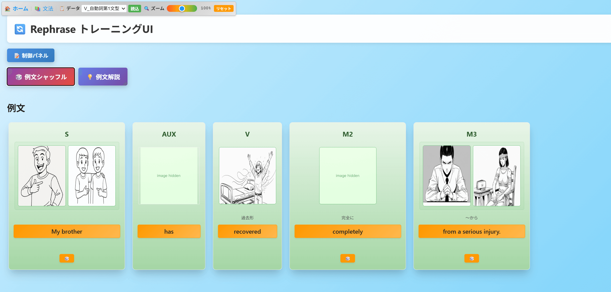
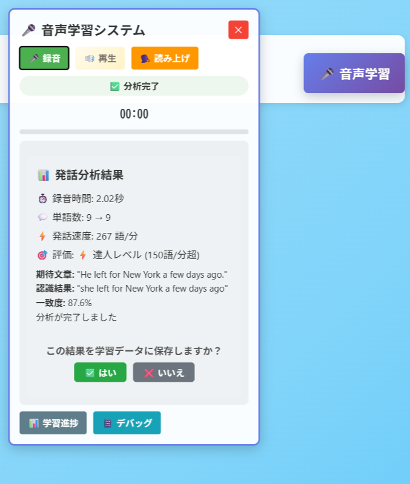

📚 こんな英語学習の悩み、ありませんか？
- 「文法ルールは覚えたけど、実際に使えない...」
理論は分かるのに、実践で活用できずにもどかしい思いをしている - 「長い文章になると、どこが主語かわからなくなる」
複雑な文構造を前に、文法の基本を見失ってしまう - 「なんとなく理解したつもりだけど、確信が持てない」
曖昧な理解のまま進んで、基礎が不安定になっている - 「単調な文法学習に飽きてしまった」
同じパターンの練習ばかりで、モチベーションが続かない
✨ Rephraseが解決する5つの革新機能
① 文法のアウトプット練習

「覚える」から「使える」へ
受動的な暗記ではなく、実際に文構造を組み立てる能動的な練習で、文法を身体で覚えます。頭で理解したことを手と目で確認することで、確実な定着を図ります。
② 文を「箱」に分解

複雑な文も一目瞭然
長い文章も主語・動詞・目的語・修飾語などの「箱」に視覚的に分解。文法要素の役割と関係性が色分けで明確になり、構造の理解が格段に深まります。
③ 箱の中身をシャッフル

無限のパターンで飽きない学習
同じ文法構造でも単語をランダムに変更。多様な例文パターンで練習することで、特定の文章に依存しない真の文法理解を身につけます。
④ イメージ画像表示と英語非表示
日本語に頼らない英語脳育成
画像ヒントで単語の意味を推測し、日本語に依存しない学習環境を実現。視覚的な理解で記憶定着率を向上させ、自然な英語思考を育てます。
⑤ 音声解答認識機能
話す練習で実践力アップ
構築した文章を実際に発話して確認。音声認識技術で発音チェックも行い、「読む・書く・聞く・話す」の4技能を統合的に伸ばします。
🚀 新しい英語学習を今すぐ体験
Rephraseで「わかったつもり」を「確実な理解」に変えませんか？
文法の基礎から応用まで、段階的にスキルアップできます。